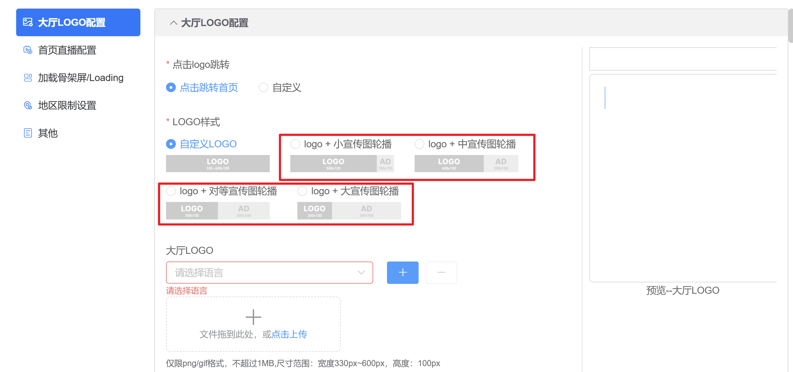
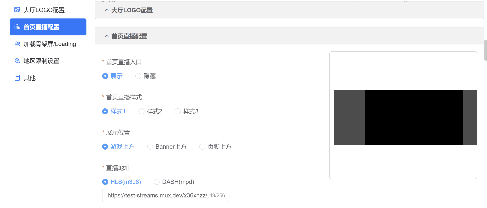
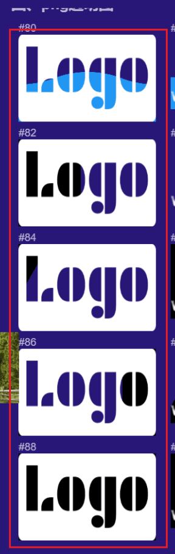
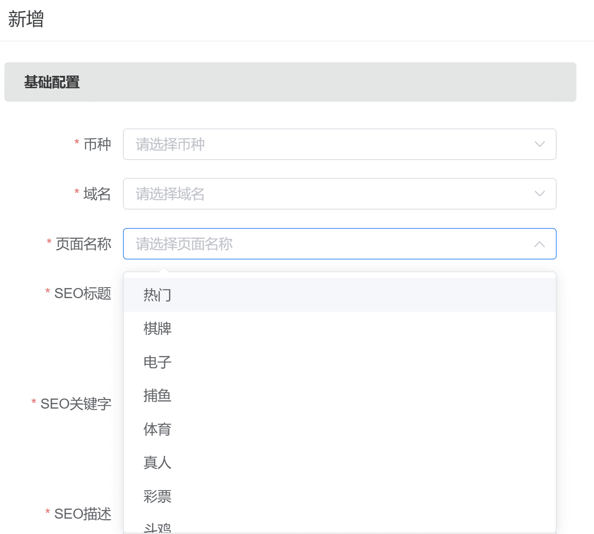
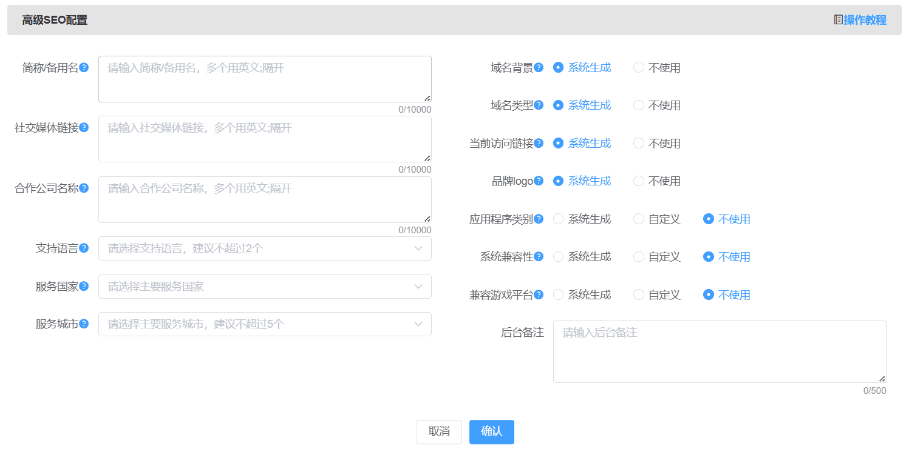
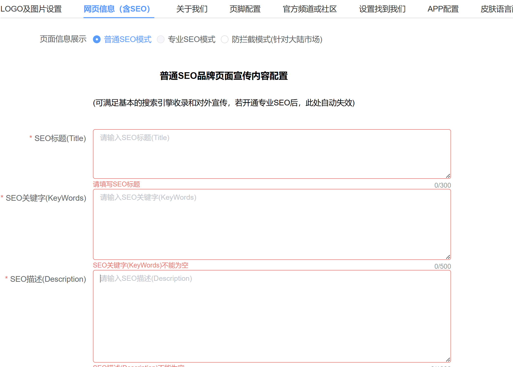
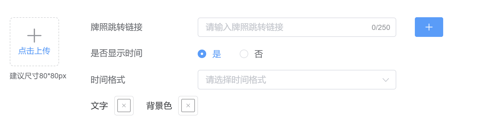
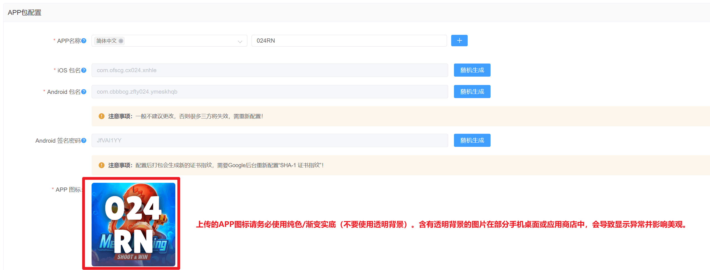
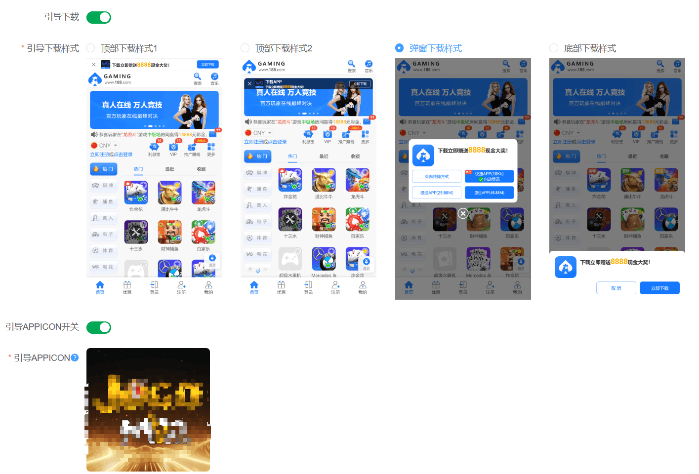
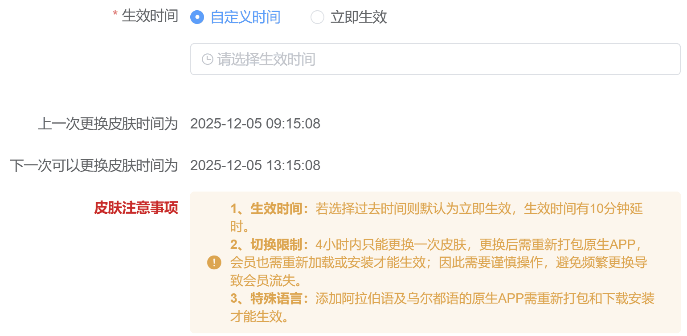

一、LOGO及图片设置
大厅LOGO设置
功能说明：用于设置平台品牌相关，目前只支持设置2种LOGO展示类型（只能选择其中一个展示模式）
1、品牌名称(站点名)：只能展示一种语种，不超过30字符，设置后将在客户端关于我们展示
2、点击logo跳转：可选择跳转首页或者自定义外链
3、logo样式，原本自定义logo不变，新增宣传图轮播，根据不同样式上传不同尺寸的宣传图，相同语言下子宣传图最多上传三张

4、大厅logo：必填，根据站点语言展示，按照提示点击上传
5、二级页面顶部是否展示LOGO：默认为【隐藏】，勾选【展示】二级页面顶部将展示logo配置
6、网页标题、网页logo：必填，按照提示点击上传，当未配置时默认兜底为APP icon
首页直播配置
1、首页直播入口，单选，展示：客户端展示直播，隐藏：客户端不展示直播
2、首页直播样式，单选，选择展示直播后，样式为必填
3、展示位置，单选，选择展示直播后，位置为必填，其中体育版皮肤多三个位置可以选择
4、直播地址，单选，按照内容输入
5、直播封面图，按照语言配置，根据提示尺寸上传封面图
注意：iOS原生APP受系统限制，仅支持HLS格式，请核实配置

加载骨架屏/loading
1、加载样式：可配置骨架屏和loading，可选择后台样式及自定义上传
2、全局加载动画loading：可选择Logo图片、艺术字体、png透明图(代码动画)、纯代码动画(极简)、进度条样式、自定义gif(不推荐)
先选择样式，再根据下方的提示进行logo配置，配置后大厅将在弱网/页签切换下展示加载loading
(1) Logo图片
支持当前logo和自定义上传
动画样式支持23种
动效色可选自定义/跟随皮肤
背景色可选自定义/跟随皮肤
底纹样式可选系统底纹/跟随皮肤
配置后后台可同步预览效果
(2) 艺术字体
设置品牌名称、字体、字体颜色
动画样式支持62种
动效色可选自定义/跟随皮肤
背景色可选自定义/跟随皮肤
底纹样式可选系统底纹/跟随皮肤
配置后后台可同步预览效果
(3) png透明图(代码动画)，建议使用圆角的，展示效果更优
上传png透明图
动画样式支持3种
动效色可选自定义/跟随皮肤
背景色可选自定义/跟随皮肤
底纹样式可选系统底纹/跟随皮肤
配置后后台可同步预览效果

(4) 纯代码动画(极简)
动画样式支持43种
动效色可选自定义/跟随皮肤
背景色可选自定义/跟随皮肤
底纹样式可选系统底纹/跟随皮肤
配置后后台可同步预览效果
(5) 进度条样式
动画样式支持3种
动效色可选自定义/跟随皮肤
背景色可选自定义/跟随皮肤
底纹样式可选系统底纹/跟随皮肤
配置后后台可同步预览效果
(6) 自定义gif(不推荐)
上传png/gif图
动效色可选自定义/跟随皮肤
背景色可选自定义/跟随皮肤
底纹样式可选系统底纹/跟随皮肤
配置后后台可同步预览效果
注意：旧版APP不支持新样式，会展示默认样式（文案为：加载中）
地区限制设置
地区限制：可选择背景色，富文本编辑器，支持图片上传
其他
后台备注
温馨提示：配置后，可查看右边预览图效果，修改后请务必点击【保存】
二、含SEO
提示：所有推广的TDK配置必须要有热门(首页)
专业SEO配置
1、站点默认为普通seo，如需专业seo请联系客服处理
2、专业seo为收费模式，费用为100USDT/月，开通直接站点额度扣除，如有配置子站点，子站点也需要扣费100USDT/月，主站点和子站点状态必须保持一致
专业SEO、防拦截开关，如开启防拦截设置则默认不配置SEO，24H内仅支持操作一次
3、关于配置页面：此处的页面名称尽可能全部配置完整，每个类型都配置独立的TDK，如果配置都一样，在收录时会降低权重
简称/备用名、社交媒体链接、合作公司名称若填写多个，需用英文符号;隔开
支持语言为该域名地址主要使用的语言，建议不超过2个
服务城市为预期主要推广服务的城市，若没有特殊推广的城市可以忽略不填，建议最多不超过5个
品牌logo支持自行开启选择系统生成，系统生成为 品牌配置的logo图片
应用程序类别：支持自行开启选择系统生成、自定义（自定义支持自行输入）；系统生成为游戏应用
系统兼容性：支持自行开启选择系统生成、自定义（自定义支持自行输入）；系统生成内容为 Windows, macOS, Android, iOS
兼容游戏平台：支持自行开启选择系统生成、自定义（自定义支持自行输入）；系统生成内容为 Android, iOS


4、Meta标签：仅支持搜索引擎对网页验证用
注：Meta标签非必填，同一币种域名仅支持新增一条，如未配置数据则展示为空，点击【新增】可按照币种、域名、Meta标签去新增
5、如想要在链接中展示对应得缩略图为大图，则需要添加对应得meta 标签
<meta property="twitter:card" content="summary_large_image">
专业SEO映射
注：此处设置请咨询专业人士对服务器处理
普通SEO
注：普通SEO仅支持配置一条信息，默认对应首页，并兼容站点所有域名，如想要更专业的配置，可点击切换到专业SEO，切换成功后普通SEO将失效
权限问题：此处需要单独开启权限，开启后才展示页面内容
如想要在链接中展示对应得缩略图为大图，则需要添加对应得meta 标签<meta property="twitter:card" content="summary_large_image">

三、关于我们
（1）关于我们：开启后将在前端<我的>页面里展示<关于我们>的入口，关闭则隐藏此入口，无配置信息时默认关闭入口，有一条配置信息时默认开启入口
（2）搜索：可按照标题、语言、币种、操作人搜索，支持重置
（3）新增：币种、标题、语言、内容为必填项，内容支持翻译
（4）详情：点击查看本条关于我们详情
（5）修改：点击修改本条关于我们
（6）删除：点击删除本条关于我们
（7）批量操作：支持批量删除
（8）置顶：点击后当条配置项会展示在大厅最左边
温馨提示：完成后请务必点击【确认】
四、H5页脚配置-支持主站点、子站点设置
1、新增功能：根据当前站点语言可分别配置，点击左边拖拽箭头进行展示排序
选择所选语言，点击右边【修改】进入编辑页面
2、页脚样式
支持6种样式切换，排版不一样
（1）图片上传/删除：移动到添加框可点击上传本地图片（仅限png格式，且不超过2MB）；上传后移动到图片框可删除图片
（2）网址输入框：输入对应图片的网址可在页脚点击此图片时跳转至对应网址（请输入正确的带http(s)://的网址格式，限制250字数）；输入后可点击输入框内打叉按钮一键删除所输入网址
（3）增加/去掉按钮：点击增加按钮可在下方增加一项【图片】和【网址】；点击去掉按钮将把此项的【图片】和【网址】删除
3、快捷跳转
（1）快捷跳转菜单：点选所需展示的跳转页标题将会在每一页面的页脚展示，点选可在右侧预览图查看效果（点击第一行的第一项将把那一列的菜单全选/去掉）
（2）隐藏：勾选后web页面不展示该模块信息
（3）预览图：可在此查看所更改的【快捷跳转】、【合作方信息配置】、【公司信息】、【牌照资质】和【联系信息】的效果
（4）收起/展开：点击收起可将此部分内容收起展示；点击展开可将此部分内容展示
（5）新增栏目：支持配置外链跳转
操作方法：
1、支持创建一个一级栏目，跟娱乐城、游戏、支持平级(一次新增一个，限制新增10个一级栏目)
2、二级栏目可选择放在娱乐城、游戏、支持或新增一级栏目下方(限制10个二级栏目)
3、二级栏目支持内部跳转、外部跳转，选择外部链接时支持新窗口打开，打开窗口支持http和https，当前页打开只支持https，注意链接的正确性
4、新增-牌照合规
（1）年龄限制：此处不能修改，需要在注册和验证-用户协议配置 页面修改，部分定制版屏蔽此功能
（2）自我禁止：此处不能修改，需要在合规配置-自我禁止 页面修改，有勾选默认展示自我禁止图标，点击可跳转
（3）牌照图片：根据提示配置，属于新增内容，无配置则不展示

5、联系我们
隐藏：勾选后客户端不展示该模块信息
6、官方频道
隐藏：勾选后客户端不展示该模块信息
7、页脚内容
（1）改为富文本编辑：根据右边的预览状态调整版面位置
（2）隐藏：勾选后客户端不展示该模块信息
注意：部分版式APP有页脚功能，但是富文本编辑器中段落、字体背景、表格、样式编辑等APP无法展示，请使用常用功能编辑，根据客户端展示调整
五、官方频道或社区
客户端单个币种最多支持配置8条数据
（1）搜索：可按照操作事件、ID、币种、状态搜索，支持重置
（3）新增：币种、名称、链接、图标、状态为必填项，备注选填
图标：支持上传，最多可上传8个，不用的图标请删除后再上传，开启状态中的图标不支持删除，请先关闭后再删除
（4）详情：点击查看本条频道详情
（5）修改：点击修改本条频道信息
（6）删除：点击删除本条频道
（7）批量操作：支持批量删除
（8）置顶：点击后当条配置项会展示在大厅最左边
温馨提示：完成后请务必点击【确认】
六、设置找到我们功能说明：帮助用户记住网址，找到备用网址
1、页面为表单结构，支持主站点和子品牌分别配置，每条数据均支持修改和查看详情
2、是否展示回家路：总开关，必填项
开启后：展示下方的功能配置，客户端进入时自动弹窗提醒，客户端侧边栏、中部导航、我的页面均显示入口
3、是否弹窗提醒：必填项
开启后，可选择弹窗方式和今日不再提示
注意：开启自动弹窗后，客户端弹窗优先级为2，未配置第一优先级的弹窗即进入客户端就弹出
4、是否强制保存：必填项，开启后下方网址快捷按钮必须选择保存图片或者保存到记事本，否则无法保存
开启后，客户端弹窗无关闭按钮，必须点击保存图片自动关闭
5、弹窗顶部引导文案(新增)：非必填
支持自定义编辑，支持翻译，最多可编辑100字符
6、展示内容：必填项，支持多选
注：右边预览可拖动排版
勾选回家网址：支持配置网址宣传语，下方勾选大厅相关网址以及下载站网址
网址快捷按钮(新增)：可选择保存图片或者保存到记事本(APP保存记事本唤醒系统分享，通过分享方式，将找到我们的内容转为文本通过调用本地短信、邮箱、记事本、三方通讯软件等应用进行文本内容快捷转发，H5在浏览器中有限制只能是下载域名/邮箱内容的txt文件)
勾选回家邮箱：支持配置邮箱宣传语，下方添加相关邮箱号
勾选下载APP：选择安装类型，调用APP下载弹窗
提示：建议升级新版APP使用此功能，旧版功能有所限制
所有宣传语富文本内容建议不要输入特殊格式，避免展示异常
七、APP配置
1，app包管理-app配置-Android 签名密码
修改密码可以生成新的签名，为空的时候使用默认的签名密码与指纹
配置后打包会生成新的证书指纹，需要google后台重新配置 SHA-1证书指纹

打包app -安卓-证书指纹 查看当前的证书指纹

设置android 签名密码 会影响谷歌快捷登录 ，只需要把打包成功重新生成的证书指纹，去谷歌开发者平台更换成最新的证书指纹 谷歌快捷登录其他配置不需要更改 只换SHA-1证书指纹

设置android 签名密码 ，异常问题解决方案
1、修改apk签名后，站点打包使用的签名就和其他站点不同，以免默认签名被标记，安装时提示不安全
2、修改apk签名也有副作用，修改后，三方登录的配置需要修改（sha-1证书指纹）
3、apk签名可以默认，不是必须要改，只建议安装有报毒的apk修改
4、apk签名修改后，新打的站点包、渠道包都会使用新签名，老包也能正常使用
5、清空apk签名，则使用默认签名 6、修改apk签名后，只针对新打的包生效，老包还是老签名
特别说明：渠道管理不受全局配置影响
引导下载：区分Android、iOS、PC的下载配置，可分别对这3种设备配置不同的APP下载类型
（1）引导下载：开关控制前台页面是否展示引导下载
（2）引导APPICON：控制顶部下载样式1、顶部下载样式2的图标，其他配置在品牌设置中的引导下载配置

注：频繁引导弹窗，直至下载：开启后每次返回大厅都将弹出下载引导

八、原站点管理皮肤切换、语言配置内容整体迁移
一、列表字段展示
1、搜索栏：可根据品牌ID、皮肤相关进行搜索
2、预览列表展示：品牌ID、预览图、生效时间等
3、点击详情展示全部
4、点击修改进入修改状态
二、修改页面
1、按照页面选择版式、皮肤颜色、大厅背景、站点语言
2、新增生效时间选择，可选自定义、立即生效
3、增加后台备注信息
4、右边预览配置三种主流语言的预览图，可对应查看
5、需注意切换限制：4小时内只能更换一次皮肤，更换后需要重新打包原生APP，会员也需重新加载或安装才能生效

注意事项：
合并站点：所有品牌站点必须是单一相同币种，相同皮肤版式才能合并
多品牌下支持版式切换，不同的版式所属配置不一样，切换后需重新检查配置，比如logo、游戏图标、banner等